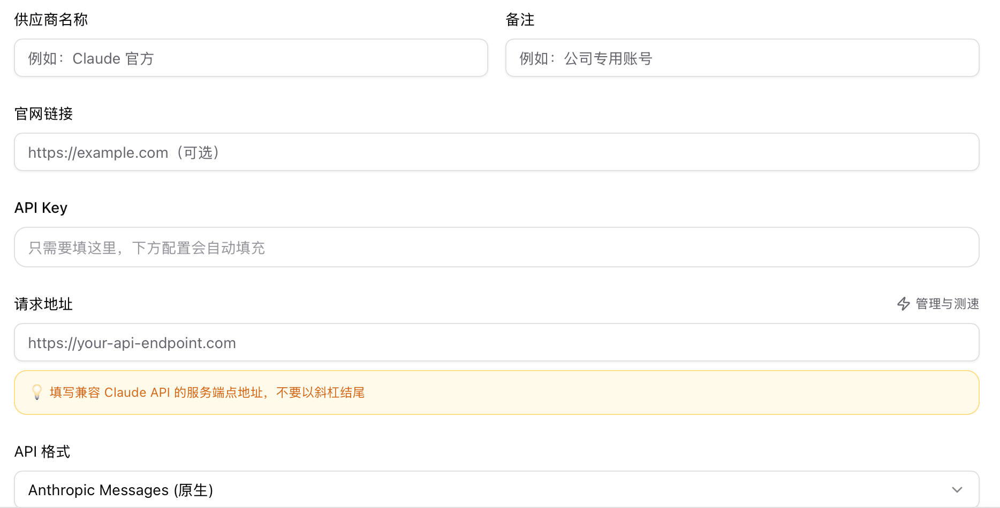
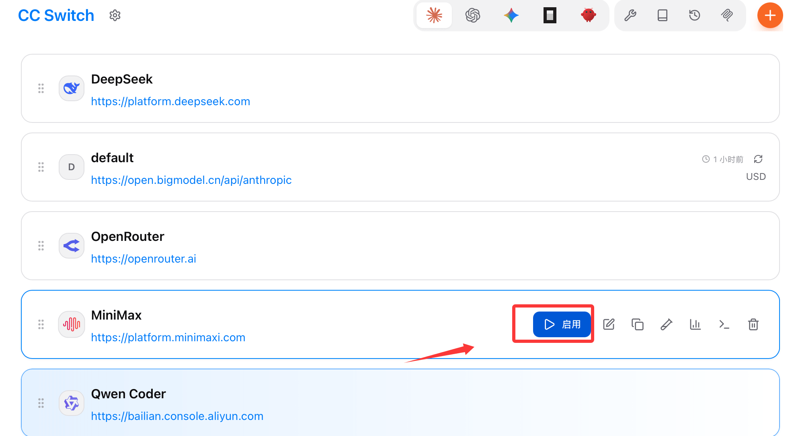
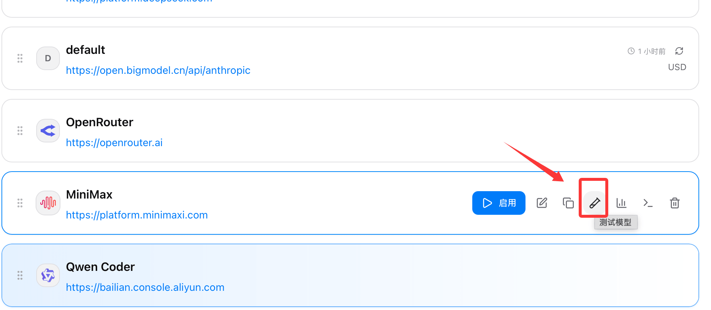
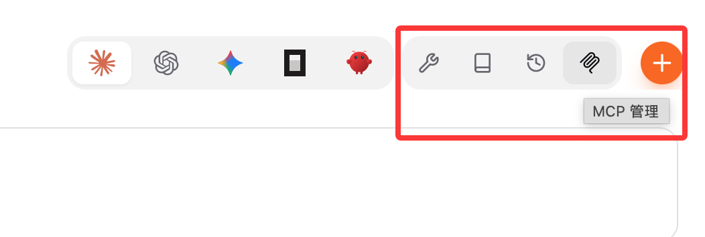
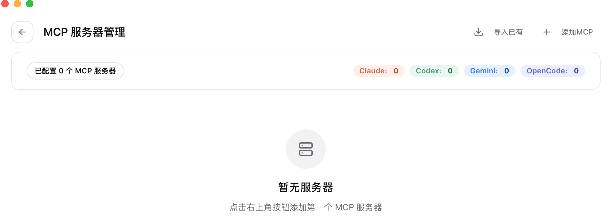

CC Switch ワンクリック切替 API
Claude Code、OpenAI Codex、Gemini CLI などの AI プログラミングツールの普及に伴い、開発者は複数の API プロバイダー（公式 API、国内ミラー、サードパーティプロキシなど）を頻繁に切り替える必要があります。設定ファイルを毎回手動で修正するのは煩雑で、エラーも発生しやすいです。
CC Switch はこの課題を解決するデスクトップツールで、統合されたグラフィカルインターフェースを提供し、以下のことが可能です：
| 機能 | 説明 |
|---|---|
| 🔄 ワンクリックで Provider を切り替え | 複数の API 設定を保存し、ワンクリックで切り替え可能。JSON を手動編集する必要はありません |
| 🖥️ 複数アプリの一元管理 | Claude Code、Codex、Gemini CLI、OpenCode、OpenClaw の5つのツールを同時に管理 |
| 🛡️ ローカル API プロキシ | 高性能 HTTP プロキシを内蔵し、自動フェイルオーバーとリクエスト監視をサポート |
| 🔌 MCP サーバー管理 | MCP サーバー設定をビジュアルに追加・編集・同期 |
| 📊 使用量統計 | Token 消費量と API 費用をリアルタイムで確認 |
| 💾 バックアップと復元 | 設定を自動バックアップし、誤操作によるデータ損失を防止 |
管理対応アプリ
- 🤖 Claude Code（Anthropic）
- ⚡ Codex（OpenAI）
- ✨ Gemini CLI（Google）
- 🧩 OpenCode（オープンソース）
- 🦅 OpenClaw（5つ目のアプリ、v3.11.0 で追加）
インストール
アクセスGitHub Releases: https://github.com/farion1231/cc-switch/releases/latest対応プラットフォームのインストールパッケージをダウンロードしてください。
ページ最下部のリソースパッケージセクションまでスクロールし、対応プラットフォームのインストールパッケージをダウンロードしてください：
システム要件
| OS | 最低バージョン | アーキテクチャ |
|---|---|---|
| Windows | Windows 10 以降 | x64 |
| macOS | macOS 10.15 (Catalina) 以降 | Intel (x64) / Apple Silicon (arm64) |
| Linux | 下表を参照 | x64 / arm64 |
Windows
| ファイル | 説明 |
|---|---|
CC-Switch-vX.X.X-Windows.msi |
✅ 推奨—MSI インストールパッケージ、自動更新対応 |
CC-Switch-vX.X.X-Windows-Portable.zip |
ポータブル版、解凍後すぐに使用可能、レジストリを書き込みません |
MSI ファイルをダブルクリックし、ウィザードに従ってインストールを完了したら、スタートメニューで「CC Switch」を検索して起動します。
⚠️ Windows 版では、プロトコルハンドラの副作用を避けるため「ワンクリックインストール」機能が無効化されています。Claude Code などのツールをインストールする場合は、手動でインストールしてから CC Switch で管理してください。
macOS
方法1：直接ダウンロード（推奨）
- ダウンロード
CC-Switch-vX.X.X-macOS.zip - 解凍後、
CC Switch.app「アプリケーション」フォルダにドラッグします - 初回起動時に右クリック →「開く」を選択するか、「システム設定 → プライバシーとセキュリティ → それでも開く」に進みます
⚠️ 作者に Apple 開発者アカウントがないため、macOS で「不明な開発者」と表示される場合があります。ダイアログを閉じた後、「システム設定 → プライバシーとセキュリティ」で「それでも開く」をクリックすると、以降は毎回正常に起動できます。
方法2：Homebrew
# 添加 tap 并安装 brew tap farion1231/ccswitch brew install --cask cc-switch # 更新 brew upgrade --cask cc-switch
Linux
ディストリビューションに応じて対応する形式を選択してください：
| ディストリビューション | 推奨形式 | インストールコマンド |
|---|---|---|
| Ubuntu / Debian / Mint | .deb |
sudo apt install ./CC-Switch-*.deb |
| Fedora / RHEL / Rocky | .rpm |
sudo dnf install ./CC-Switch-*.rpm |
| openSUSE | .rpm |
sudo zypper install ./CC-Switch-*.rpm |
| Arch / Manjaro / その他 | .AppImage |
以下を参照 |
AppImage の使用方法：
chmod +x CC-Switch-*.AppImage ./CC-Switch-*.AppImage
クイックスタート
インストール完了後、以下の手順で初期設定を行います：
ステップ1：CC Switch を起動
初回起動時、CC Switch はインストール済みの CLI ツールを自動検出し、既存の設定のインポートを試みます。システムトレイに CC Switch アイコンが表示されます。
ステップ2：管理するアプリを選択
メイン画面上部はアプリ切り替えバーになっており、対応するアイコン（Claude Code / Codex / Gemini CLI など）をクリックすると、現在管理するアプリを切り替えられます。不要なアプリは設定で非表示にできます。

ステップ3：最初の Provider を追加
右上隅の+をクリックし、内蔵プリセットから選択（例：公式 Anthropic API、DeepSeek、Alibaba Cloud Bailian など）、または以下の情報を手動で入力します：

- 名前：識別しやすいように付ける備考名
- API Key：プロバイダーが発行する API キー
- Base URL（オプション）：カスタムプロキシ URL
- モデル：デフォルトで使用するモデル名を指定
- API 形式：Anthropic Messages ネイティブ形式、または OpenAI Chat Completions 互換形式

ステップ4：Provider を切り替え
リストで対象の Provider をクリックし、「有効化」をクリックすると、CC Switch が対応する CLI ツールの設定ファイルに自動的に設定を書き込みます：

ターミナルで直接claudeコマンドを実行すると、新しい設定が使用されます。
ステップ5：設定の検証（オプション）
Provider の横にある「ヘルスチェック」ボタンをクリックすると、テストリクエストを送信して API キーとネットワーク接続を検証できます。

💡
Cmd/Ctrl + ,を押すと設定をすばやく開きます；ESCを押すと現在のパネルを閉じます。
高度な機能

MCP サーバー管理
「MCP」パネルで、MCP（Model Context Protocol）サーバーをビジュアルに追加・編集・削除できます。設定は対応する CLI ツールに自動同期され、インストール済みアプリから既存の MCP 設定をワンクリックでインポートできます。

Skills 管理
Skills は Claude Code のプロンプト拡張機能です。CC Switch は以下をサポートします：
- GitHub リポジトリから Skills をインストール（内蔵の
baoyu-skillsなどのプリセットリポジトリ） - ローカルの ZIP ファイルからインストール
- Claude Code と Codex の Skills を管理

セッションマネージャー（Session Manager）
「セッション」ページでは、5つのアプリすべての過去の会話履歴を閲覧できます。ディレクトリナビゲーションとセッション内検索に対応し、現在のアプリに応じて自動的にフィルタリング表示されます。

バックアップ管理
CC Switch はデータベースを定期的に自動バックアップし、データベース移行前にも自動バックアップを作成します。「設定 → バックアップ管理」では、すべてのバックアップの表示、名前の変更、削除、手動バックアップの作成が可能です。
使用量統計と課金
「使用量」ページでは Token 消費統計を表示し、自動更新、キャッシュヒット率の分析、モデル別・Provider 別の費用確認に対応しており、API 費用の管理に役立ちます。
Claude Rectifier（思考署名修復）
一部のサードパーティ API ゲートウェイを使用する場合、Claude の thinking block 形式が互換性を持たないことがあります。Rectifier を有効にすると、プロキシ層がこの問題を自動的に修正します。「設定 → 詳細」でオン/オフを切り替えられます。
WebDAV 自動同期
WebDAV サービス（例：Nutstore（坚果雲））へのデータベース同期をサポートし、複数デバイス間での設定共有を実現します。大容量ファイルの誤送信を防ぐ保護メカニズムを内蔵しています。
その他の拡張機能
クリックしてノートを共有
メモは本記事の内容の拡張である必要があります！
記事投稿は、こちらをクリックしてください
登録招待コードの取得方法
メモを共有する前にログインが必要です！
登録招待コードの取得方法